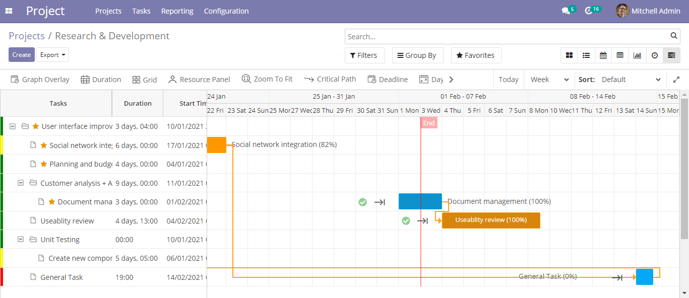
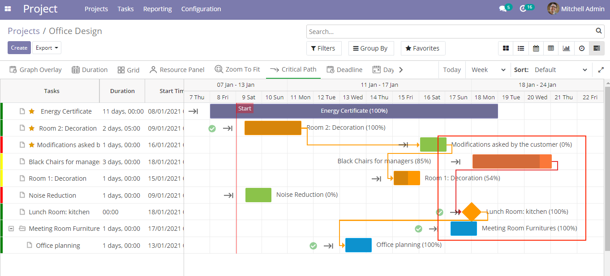
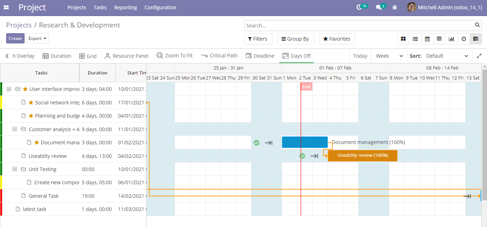
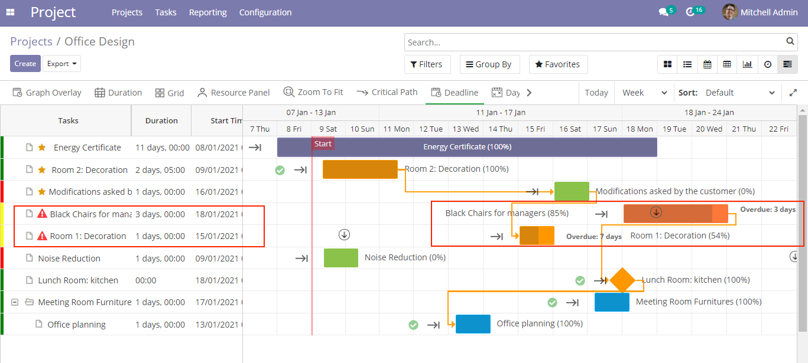
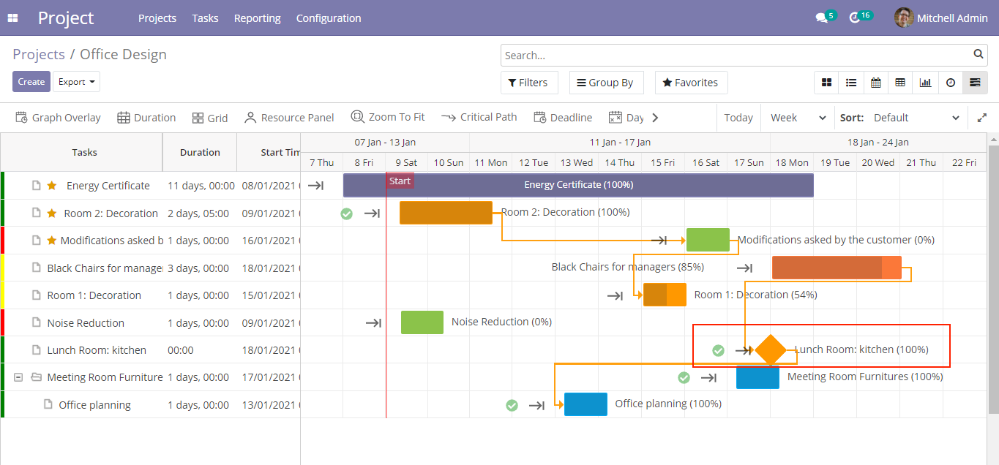
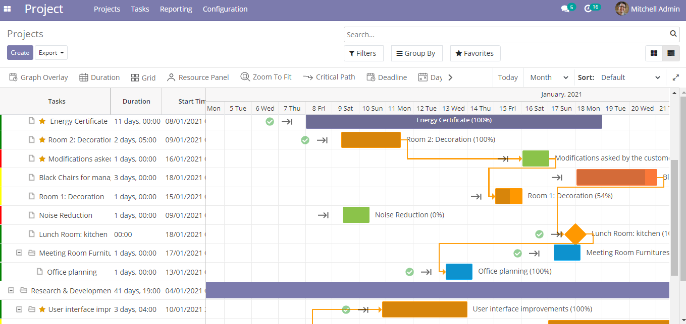
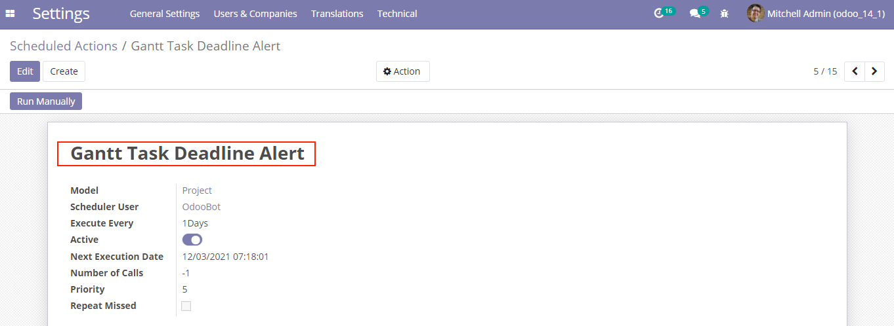
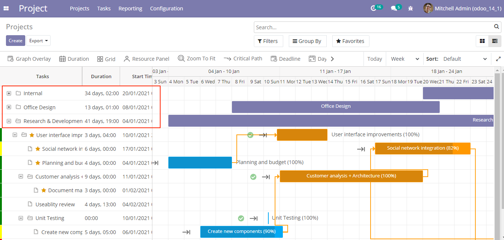

Powered By Ksolves
The Ultimate Tool To Plan Projects Over a Cup Of Coffee!
Gantt View is a tailored solution to seamlessly plan, manage, modify, and conclude projects under a fixed timeline. Our Odoo Gantt Chart encapsulates all the amazing features into one easy-to-use platform.
Connect with our experts to know more about Gantt View

All in One, From A Simple Gantt Chart to Elaborate Project Management Tool
40%
Advancement/Enhancement in Team Productivity & Resource Planning
75%
Improvement in Following Dates & Deadlines
50%
Reduction in Time Spent on Identifying Overlapping Activities & Task Dependencies
38%
Cost Saving on Project Management
USPs
Auto-Schedule Tasks
In Odoo Gantt View App, Auto-schedule automatically schedules a dependent task easily by just linking it with a parent task. Relocating the parent task schedule in the Gantt View will result in the child task getting auto-scheduled based on the end date of the parent task. The latter starts automatically as the parent task ends.
Critical Path
Critical path displays the task dependencies. It shoots an alert by marking the path in red if it is linked to a dependent task that remains pending when the former has finished.
Eliminate Unproductive Days
Gantt View allows you to eliminate holidays or unproductive days from the timeline in Odoo Gantt Chart for better project visualization & management. By hiding such days, you can focus on the work progress during productive days.
Deadline Alert
The Toggle Deadline feature lets you quickly go through the pending tasks in Gantt View in Odoo that have overrun their completion dates. Such tasks are marked in red in the Task list or an inverted arrow in the task timeline. This aids in prioritization of tasks, Stress-free task delegation & smarter staff scheduling decisions.
Presentation Mode
Presenting the nitty gritties of Odoo Project Management Module can be a daunting task. Gantt View allows you to launch the Presentation Mode that turns your screen into an ally as you alter, brainstorm & explain the project details by using the extensive Action Bar functionalities such as Graph Overlay, Grid, Resource Panel, Critical Path, etc.

Set Your Milestones
Set milestones to mark the end of a critical phase or the end of a project in the Odoo Project Gantt Chart. The important days that are set as milestones aid in organizing the tasks better & adhere to a punctual approach to finish them in time.
Multi-functional Resource Panel
From resource utilization to project cost estimation, manage everything from the Gantt View Resource Panel. Live task progress provides smart visualization & keeps you updated about everything at a glance. Project costs are estimated and managed in real-time while addressing constraints with pin-point accuracy.

Smart Display of 30000+ Tasks
In Odoo Gantt Operate with more than 30,000 datasets with ease, thanks to smart rendering! It substantially enhances the data rendering speed while working with huge data volumes.
Email Alerts
Email alerts can be scheduled for project tasks based on the End Date. As the task nears the completion date, alerts will be issued due in upcoming days. In addition to that, alerts can also be activated for overdue tasks, timesheet reminders etc.
Single Gantt View For Multiple Projects
In Odoo Gantt View several projects at a glance in a unified Gantt View in the left pane, that displays information about projects. It holds columns of information about your project, such as the task name, duration, start date, and more. The right pane provides the graphical representation of the projects. Have an overview of every project at your fingertips!
Themes
There are 7 different template designs available to customize the User Interface of Gantt View.


Key Highlights
Action Bar
Project Management Was Never So Easy!
Gantt View
Modify The View As Per Your Wish!

Edit Task
Tailor Each Task On the Go!

Project Level Customization
Customize The Project UI
All Features
Auto-Schedule
Tasks
Critical
Path Tasks
Eliminate
Unproductive Days
Deadline
Alert
Presentation
Mod
Set Your
Milestones
Multi-functional
Resource Panel
Smart
Display of
30000+ Tasks
Email
Alerts
Multi-Project
Support
7 Themes
Graph
Overlay
Duration
Grid
Zoom To
Fit
Today
Button
Time
Sorting
Zoom In
Unschedule
Task
Task
Duration
Average
Hour Per
Day
Schedule
Mode
Days off
Constraints
Start &
End
Date of
Project Constraints
Tooltip
Settings
Dynamic
Text
Dynamic
Progress
Quick
Info
Markers
Taskbar
Color
Keyboard
Shortcuts
Auto-Schedule
Tasks
Critical
Path Tasks
Eliminate
Unproductive Days
Deadline
Alert
Presentation
Mod
Set Your
Milestones
Multi-functional
Resource Panel
Smart
Display of
30000+ Tasks
Email
Alerts
Multi-Project
Support
7 Themes
Graph
Overlay
Duration
Grid
Zoom To
Fit
Today
Button
Time
Sorting
Zoom In
Unschedule
Task
Task
Duration
Average
Hour Per
Day
Schedule
Mode
Days off
Constraints
Start & End
Date of
Project Constraints
Tooltip
Settings
Dynamic
Text
Dynamic
Progress
Quick
Info
Markers
Taskbar
Color
Keyboard
Shortcuts
Using Gantt Chart, you can simply organize & manage numerous tasks as you create & schedule projects with the assistance of a Gantt diagram.
Yes, it is possible to create projects along with tasks & sub-tasks utilizing the shortcuts like create and add buttons.
Task Duration can be set by turning on the Enable Task Duration option from the Task Edit section. Enter the Duration (number of days) from a start date and the end date will be calculated accordingly. On the other hand, to set Milestones, utilize the Task Type functionality from the Gantt View Settings. From here you can mark a task as a general task or a milestone of the project. If you mark the task as a milestone, it will have a diamond-shaped display instead of a bar
It’s pretty simple to export the Gantt chart by clicking on the Export button at the top left corner. Export the Gantt View in the format of your choice such as PDF, PNG, EXcel, Json, MS Project(XML), PrimaveraP6, iCal, etc.
You can easily link a task to potential risks, alterations, and issues making is quite simple for navigation in the software. The emerging problems get highlighted that require your attention & intervention. Critical Path lets you analyze an aberration caused due to overlapping of related task progress.
Well, they sound similar but are not the same. If we talk about Zoom To Fit, it is used to fit the Gantt chart display on the screen for your convenience. It simply fits the Gantt chart by adjusting the display of a project on the grid. On the other hand, Zoom In launches a magnified view of the Gantt View from where you can modify, brainstorm & explain the project details utilizing the wide range of Action Bar functionalities.
In Gantt View, for your convenience, you can use shortcuts. There are the following combinations: 1) Tab -Press on Tab to select the entire graphical representation of Gantt View. 2) Alt + Left/Right- Simply hold the Alt key & the Left/Right key to move the Gantt view rightward or leftward. 3) Space - By pressing the spacebar on the keyboard, you can select a task. 4) Enter - Press on Enter to open the task form. 5) Delete - The Delete key on the keyboard can be used to delete a task. 6) Ctrl + Left/Right - Hold the control key & left/right key to expand and collapse the Gantt View display.
The Mail User option present inside the Project settings allows you to assign the user Here is the list of email notifications that you can receive: - Timesheet Email Notification It is sent to the user to whom the Task Timesheet Report is assigned to, once the task is 90% completed. - Reminder Email Notification When a task approaches its deadline, an email notification is sent as the task is due in 7 days, 3 days, and 1 day. - Assignee Email Notification Whenever a user has been assigned with a task, he/she will get an email notification regarding the same.
Version 15.0.1.0.1
11 February 2022